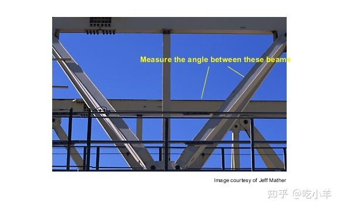
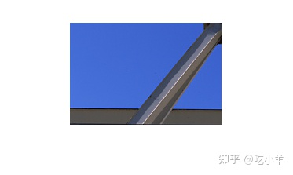
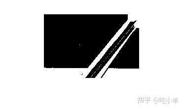
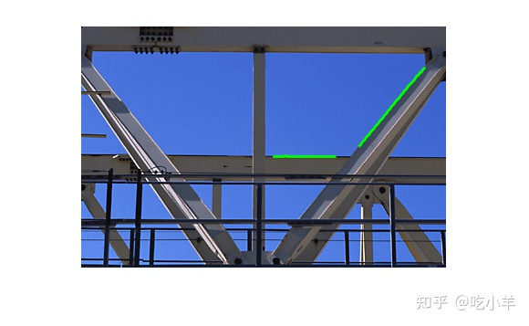
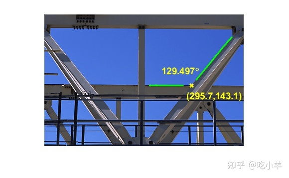

Home
本示例说明如何使用边界跟踪例程bwtraceboundary，测量两个光束之间的角度和交点。机器视觉应用中的一项常见任务是使用图像采集和图像处理技术进行自动测量。
第 1 步：加载图像
读入gantrycrane.png并绘制指向两个感兴趣光束的箭头。这是用于组装桥梁的龙门起重机的图像。
RGB = imread('gantrycrane.png');
imshow(RGB);
text(size(RGB,2),size(RGB,1)+15,'Image courtesy of Jeff Mather',...
'FontSize',7,'HorizontalAlignment','right');
line([300 328],[85 103],'color',[1 1 0]);
line([268 255],[85 140],'color',[1 1 0]);
text(150,72,'Measure the angle between these beams','Color','y',...
'FontWeight', 'bold');

步骤 2：提取感兴趣区域
裁剪图像以仅获取先前选择的龙门起重机的梁。此步骤将更容易提取两个金属梁的边缘。
% you can obtain the coordinates of the rectangular region using % pixel information displayed by imtool start_row = 34; start_col = 208; cropRGB = RGB(start_row:163, start_col:400, :); imshow(cropRGB)
% Store (X,Y) offsets for later use; subtract 1 so that each offset will % correspond to the last pixel before the region of interest offsetX = start_col-1; offsetY = start_row-1;

第 3 步：设置图像阈值
将图像转换为黑白图像，以便随后使用bwtraceboundary例程提取边缘坐标。
I = rgb2gray(cropRGB); BW = imbinarize(I); BW = ~BW; % complement the image (objects of interest must be white) imshow(BW)

第 4 步：在每个边界上找到初始点
该bwtraceboundary例程要求您在边界上指定一个点。该点用作边界跟踪过程的起始位置。
要提取低光束的边缘，请在图像中选取一列并检查它，直到存在从背景像素到对象像素的过渡再停止选择。存储此位置以供以后bwtraceboundary使用。对另一个光束重复此过程，但这次是水平跟踪。
dim = size(BW); % horizontal beam col1 = 4; row1 = find(BW(:,col1), 1); % angled beam row2 = 12; col2 = find(BW(row2,:), 1);
第 5 步：追踪边界
该bwtraceboundary例程用于提取边界点的（X，Y）位置。为了最大限度地提高角度和交点计算的准确性，重要的是尽可能多地提取属于光束边缘的点。您应该通过实验确定点数。由于水平条的初始点是通过从北向南扫描获得的，因此将初始搜索步长设置为指向对象的外部，即“北”是最安全的。
boundary1 = bwtraceboundary(BW, [row1, col1], 'N', 8, 70); % set the search direction to counterclockwise, in order to trace downward. boundary2 = bwtraceboundary(BW, [row2, col2], 'E', 8, 90,'counter'); imshow(RGB); hold on; % apply offsets in order to draw in the original image plot(offsetX+boundary1(:,2),offsetY+boundary1(:,1),'g','LineWidth',2); plot(offsetX+boundary2(:,2),offsetY+boundary2(:,1),'g','LineWidth',2);

第 6 步：将线拟合到边界
尽管 (X,Y) 坐标对是在上一步中获得的，但并非所有点都完全位于一条线上。应该使用哪些来计算角度和交点？假设所有获取的点都同等重要，将线拟合到边界像素位置。
一条直线的方程是 y = [x 1]*[a; b]。您可以使用polyfit做最小二乘拟合计算a和b.
ab1 = polyfit(boundary1(:,2), boundary1(:,1), 1); ab2 = polyfit(boundary2(:,2), boundary2(:,1), 1);
第七步：求交角
使用点积求角度。
vect1 = [1 ab1(1)]; % create a vector based on the line equation vect2 = [1 ab2(1)]; dp = dot(vect1, vect2); % compute vector lengths length1 = sqrt(sum(vect1.^2)); length2 = sqrt(sum(vect2.^2)); % obtain the larger angle of intersection in degrees angle = 180-acos(dp/(length1*length2))*180/pi angle = 129.4971
第 8 步：找到交点
求解两个方程组以获得交点的 (X,Y) 坐标。
intersection = [1 ,-ab1(1); 1, -ab2(1)] \ [ab1(2); ab2(2)]; % apply offsets in order to compute the location in the original, % i.e. not cropped, image. intersection = intersection + [offsetY; offsetX] intersection = 2×1 143.0917 295.7494
第 9 步：绘制结果
inter_x = intersection(2);
inter_y = intersection(1);
% draw an "X" at the point of intersection
plot(inter_x,inter_y,'yx','LineWidth',2);
text(inter_x-60, inter_y-30, [sprintf('%1.3f',angle),'{\circ}'],...
'Color','y','FontSize',14,'FontWeight','bold');
interString = sprintf('(%2.1f,%2.1f)', inter_x, inter_y);
text(inter_x-10, inter_y+20, interString,...
'Color','y','FontSize',14,'FontWeight','bold');

======================================================================
我的测试结果及程序
下面是我测试的代码：

注：本文根据MATLAB官网内容修改而成。